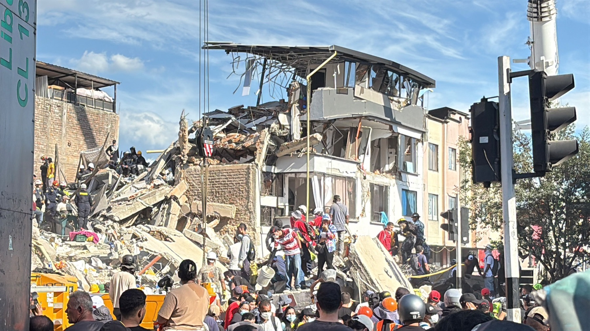
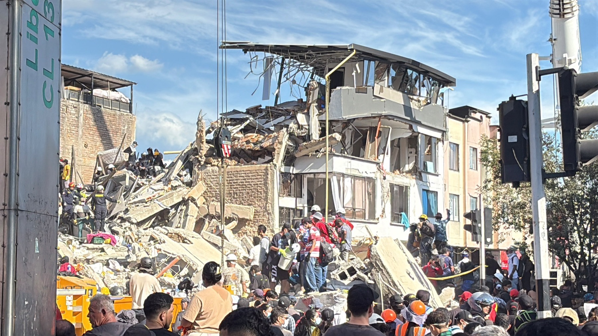

Pereira · Dosquebradas · La Virginia
Dos semanas después del sismo que sacudió el Eje Cafetero, este es el estado de la emergencia y lo que piden las familias censadas hoy.
Fuente: Servicio Geológico Colombiano, USGS y reportes oficiales en prensa nacional.
Viviendas que pidieron cada ayuda

Cargando…
Foto: World Central Kitchen · CC BY 4.0Cifras vivas del censo puerta a puerta